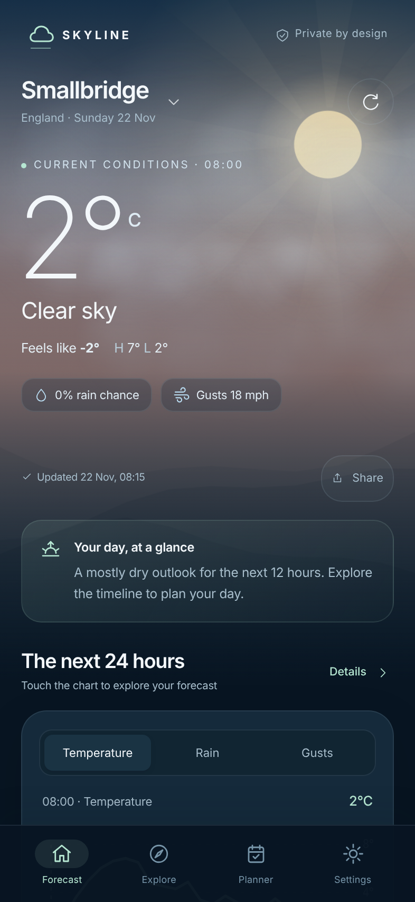
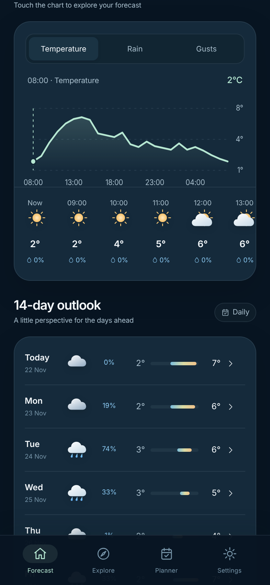
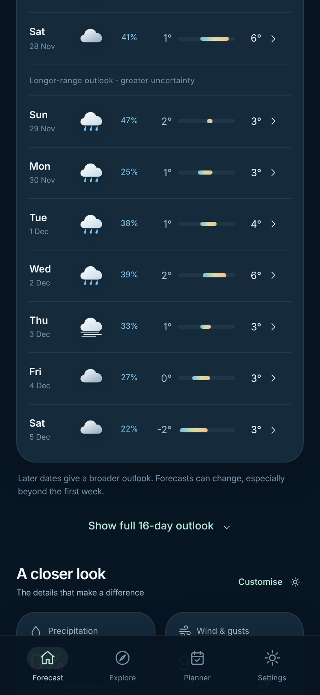
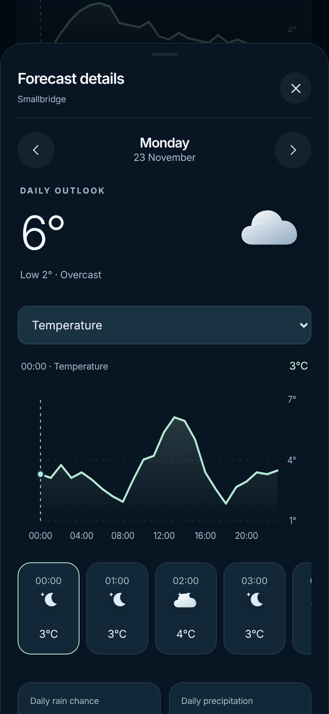
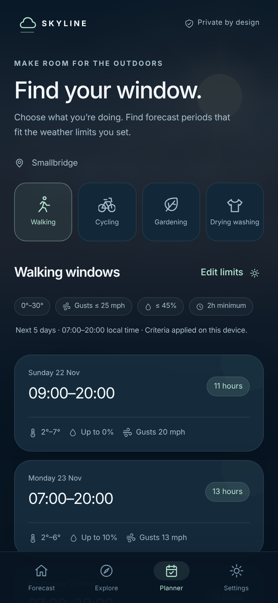
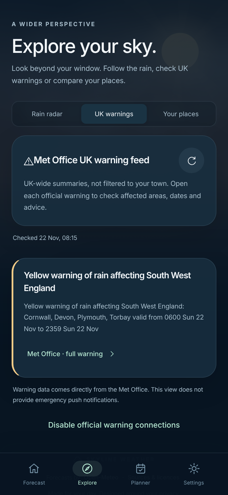
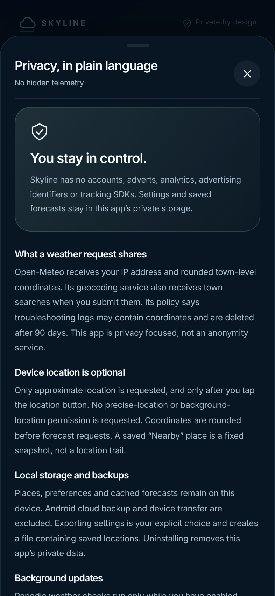
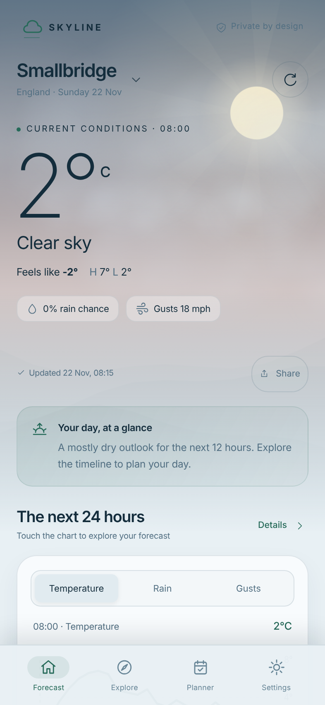

Weather with atmosphere.
Skyline is a weather app for Android with skies that move: sunshine, cloud, rain, snow, fog and the night sky, drawn live on your phone. Underneath is a forecast that tells you what you need: the next 24 hours, the next 16 days, and the best time to get outside.
It is free, with no adverts, no account and nothing to unlock. Forecasts come straight from Open-Meteo, and your places stay on your phone.
Download for AndroidHow to install
- Version 1.0.1
- Android 10 or later
- 109 KB
Free, with nothing to unlock. No adverts, no account with the developer, no tracking. Compare or read the release notes.
Chrome may say the file might be harmful. It shows this for app files that do not come from Google Play. Choose Download anyway.

- No advertsNone in the app and none on this site.
- No accountSearch for a town and you're done.
- No trackingNo analytics, no advertising ID, no background location.
- 16 daysHourly detail, with a 14-day outlook that opens to 16.
A look inside
These are the real screens, drawn from the app's own files with a real Open-Meteo forecast and Met Office feed. Swipe or scroll sideways to see them all.







How it works
No sign-up and no permissions to start. Type a town and Skyline does the rest.
Choose your town
Search for a town and pick the right one from the list. Device location is optional: it saves a rounded, fixed place that never follows you.
Read the sky
The large forecast shows now. Touch the chart or any hour to see that hour instead, and tap a day for its full detail.
Make it yours
Save up to 20 places, reorder and hide cards, choose a theme and accent, and add Current, Hourly and Daily widgets.
Everything is in, and all of it is free
Nothing below is held back for a paid tier, because there is no paid tier.
The forecast
- Now and the next 24 hours
- Temperature, feels like, high and low, rain chance and amount, wind and gusts, with a chart you can drag across.
- Sixteen days ahead
- A 14-day outlook that opens to 16, and a full hour-by-hour view of any day, for any of its measures.
- Everything else you check
- UV, air quality, European pollen in season, humidity and dew point, visibility, pressure, sunrise and sunset.
Skies that move
- Drawn live on your phone
- Sunshine, cloud, rain, snow, fog, the night sky and the moon, made on the phone rather than streamed as video.
- Kind to your battery
- Animations pause when you leave, go still in battery saver, and follow Android's reduce-motion setting. A still sky is one tap away.
Plan your day
- Activity windows
- The hours that suit walking, cycling, gardening or drying washing, within limits you can change.
- Site mode
- For construction: your own limits for wind, rain and temperature, inside your working hours. A guide to the forecast, not a permit to work.
Maps and warnings
- Recent rain radar
- An optional radar map with zoom, pan, coverage shading and playback of the last frames.
- Met Office UK warnings
- Optional official warning summaries for the UK, each linking straight to the full warning.
Widgets and alerts
- Three widgets
- Current, Hourly and Daily, resizable, each showing the place you choose and when it was last updated.
- Morning summary and alerts
- Optional: a morning summary, and alerts for rain, gusts, frost, heat and pollen at levels you set. All start switched off.
Private by design
- No account, no tracking
- No adverts, analytics or advertising ID. Places and settings stay in the app's private storage, and phone backups leave them out.
- Works offline
- Your last forecast stays readable with no signal, clearly marked with when it was fetched.
Your weather, not your data
No account, no tracking
No sign-up, adverts, analytics or advertising ID. The developer receives nothing.
Location is optional
Town search needs no permission. Device location is approximate, rounded and only used when you tap it.
Every connection listed
The app shows each service it can contact and whether it is switched on.
Installing and updating
Skyline is not on Google Play, so your phone asks a couple of extra questions the first time.
Download the app file
Tap Download on your phone. The file is called Skyline.apk and is about 109 KB. If Chrome says the file might be harmful, choose Download anyway.
Allow the install
Open the file. The first time, Android asks you to allow your browser to install apps. Allow it, go back and tap Install. If Google Play Protect steps in, choose More details, then Install anyway.
Updating later
In Skyline, open Settings and tap Check for updates. It downloads the new version from GitHub, checks it is genuine, and Android asks you to confirm. Everything you have saved is kept.
Version 1.0.1, released 22 November 2026. See the release notes, or check your download.
Questions
Is Skyline really free?
Yes. There is no paid version, no subscription and no adverts, and nothing in the app is locked.
Is it on Google Play?
No. Skyline is a personal project and is downloaded from this site as an Android app file. It needs Android 10 or later and an up-to-date Android System WebView, which comes with every current phone.
Where do the forecasts come from?
From Open-Meteo, which combines forecasts from national weather services, including the Met Office's models for the UK. Skyline asks Open-Meteo directly. There is no Skyline server in between.
Does it need my location?
No. You can search for a town without giving any permission. If you tap Use approximate location, Android gives Skyline a rough position once, which is rounded to about 2 km and saved as a fixed place. It never follows you and never runs in the background.
What does Open-Meteo see?
Your IP address, the town names you search for and the rounded position of each place you look at. Open-Meteo says its troubleshooting logs may hold positions and are deleted after 90 days. Skyline is private, but no weather app that fetches a forecast can be anonymous.
Why is the radar switched off?
The radar and the Met Office feed contact other services (RainViewer, OpenStreetMap and the Met Office), so they wait until you turn them on. You can switch each off again in Settings.
Does the radar show rain that's coming?
No. It shows the last two hours or so of radar, not a forecast. Clear patches on the map are not a promise of dry weather.
Will alerts warn me about dangerous weather?
Skyline's alerts are based on the forecast and checked when Android allows, so they can be late. They are not official warnings and not an emergency service. Official UK warnings are in Explore, and on the Met Office website.
Does it work without signal?
Yes. Your last forecast for each place stays on the phone and shows when it was fetched. You need a connection to refresh it.
Can I use the planner for work on site?
Site mode helps you see when the forecast meets your own limits for wind, rain and temperature. It does not replace your RAMS, equipment limits, permits or judgement on the day.
How do I get new versions?
Open Settings and tap Check for updates. Skyline asks GitHub, downloads the new version if there is one, checks it is genuine, and Android asks you to confirm. Your places and settings are kept.
Who made it?
Skyline is made by Jonathan Jackson, an independent developer in the United Kingdom. It is not connected with Open-Meteo, the Met Office, RainViewer or OpenStreetMap.
A clearer view of your day
Free, with no adverts and nothing to unlock. Made by the developer of several other free Android apps: see them all.